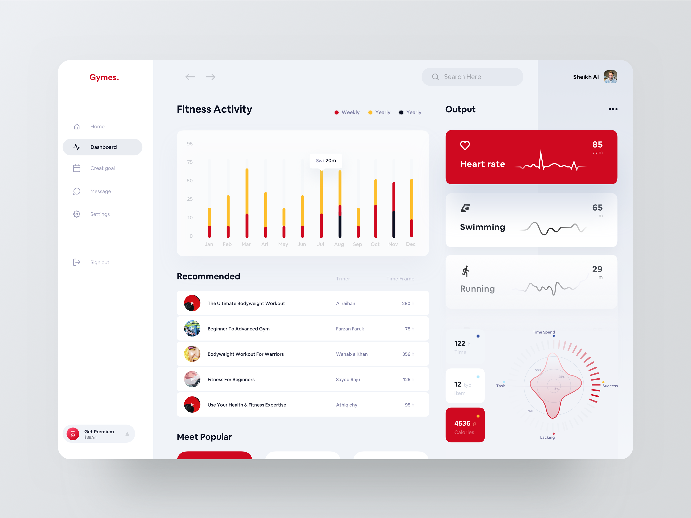
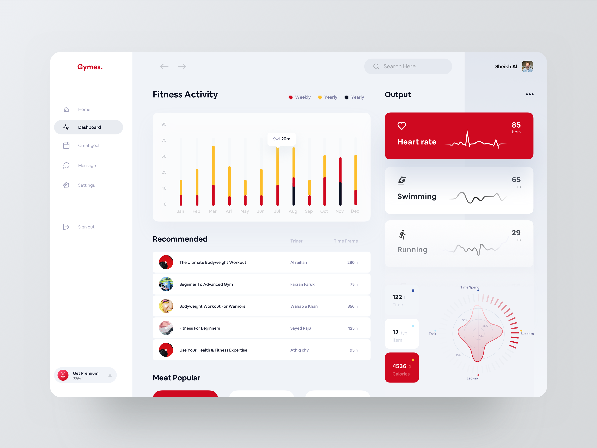

#01.1 Themenvorschlag Interaktive Datenvisualisierung
Meine Idee ist ein Dashboard für einen Fitnesstracker mit Integriertem Tracker für die Ernährung.
Die Nutzerdaten sind alle gelcih aud der Startseite. Dort kann eingesehen werden ob man tägliche ziel
erreicht hat.
Wenn man einen Bereich anklickt (zum Beispiel Schritte) dann öffnet sich ein neues Fenster wo die Schritte
der letzten Woche in der übersciht sind. Man kann aber auch weiter in die
Vergangeneheit schauen wenn einen einen bestimmten Tag interesiert. Es könnte auch der Beste Tag der Woche
dort angezeigt werden.
#01.2 Moodboard Interaktive Datenvisualisierung
 
